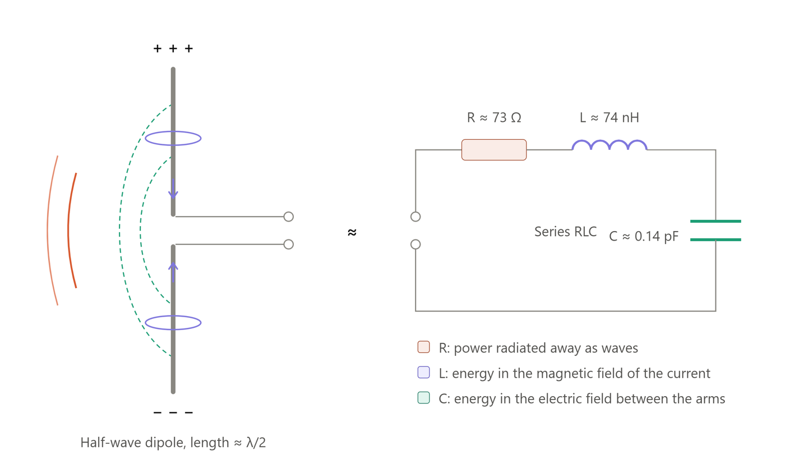

Student Assistant (Hiwi)
Institute of Ergonomics and Human-Machine Systems, RWTH Aachen- Built interactive interfaces to visualize and control robot components in Unity
- Ran containerized simulations with Docker and system tests on Linux
Electrical engineering student at RWTH Aachen, working on circuits, embedded systems and machine learning.
Aachen, Germany

U1 · Oussama Mansouri
Hardware first, with software and ML built on top.
I modeled a half-wave GPS dipole (1.575 GHz) as a series RLC circuit, simulated it like a network analyzer would measure it, and designed an L-network that matches its 73 Ω to a 50 Ω cable.
Lower is better: less power reflected back into the cable. The matched curve reaches −62 dB at 1.575 GHz (clipped at −40 dB here).

Near resonance the dipole behaves like a series RLC circuit: R is the power radiated away, L and C store energy in the magnetic and electric fields.
Transistor circuits, op-amps, filters and CMOS logic, designed and verified in LTSpice.
MATLAB models that turn real technical problems into equations and solve them.
A Unity interface to visualize and control robot components, run in containerized simulations.
Networks that read handwritten digits 0–9, built in TensorFlow and from scratch in NumPy.
See the codeClick any certificate to see it full size. Each one can be verified on Coursera.
Stanford Online & DeepLearning.AI, taught by Andrew Ng
Five methods I found most useful, condensed from the course's optional labs.
One Dense unit with no activation computes exactly w·x + b. Setting its weights by hand and comparing with NumPy proves it.
Add a sigmoid and the same unit becomes logistic regression. Neural networks are stacks of models I already knew.
# One Dense unit, no activation: f(x) = w·x + b
linear_layer = tf.keras.layers.Dense(units=1, activation='linear')
linear_layer(X_train[0].reshape(1, 1)) # first call builds the weights
set_w = np.array([[200]])
set_b = np.array([100])
linear_layer.set_weights([set_w, set_b])
a1 = linear_layer(X_train[0].reshape(1, 1)) # TensorFlow
alin = np.dot(set_w, X_train[0].reshape(1, 1)) + set_b # NumPy
# identical outputs: the layer IS the regression modelThe full Keras workflow on a coffee-roasting dataset: temperature and duration in, good or bad roast out.
Each of the 3 hidden units learned its own "bad roast" region (too cold, too short, bad combination) on its own.
# Learn mean / variance once, reuse for every future input
norm_l = tf.keras.layers.Normalization(axis=-1)
norm_l.adapt(X)
Xn = norm_l(X)
model = Sequential([
tf.keras.Input(shape=(2,)), # temperature, duration
Dense(3, activation='sigmoid', name='layer1'),
Dense(1, activation='sigmoid', name='layer2'),
])
model.compile(loss=tf.keras.losses.BinaryCrossentropy(),
optimizer=tf.keras.optimizers.Adam(learning_rate=0.01))
model.fit(Xt, Yt, epochs=10)
predictions = model.predict(norm_l(X_test)) # same normalization at inference
yhat = (predictions >= 0.5).astype(int)Softmax written from scratch, then the preferred multiclass setup: linear outputs, with softmax folded into the loss.
Computing softmax inside the loss avoids round-off error, the same care for numerics that circuit simulation needs.
def my_softmax(z):
ez = np.exp(z) # element-wise exponential
return ez / np.sum(ez) # outputs in (0, 1), summing to 1
# Preferred: linear outputs ("logits") + from_logits=True
preferred_model = Sequential([
Dense(25, activation='relu'),
Dense(15, activation='relu'),
Dense(4, activation='linear'),
])
preferred_model.compile(
loss=tf.keras.losses.SparseCategoricalCrossentropy(from_logits=True),
optimizer=tf.keras.optimizers.Adam(0.001),
)
logits = preferred_model.predict(X_train)
probs = tf.nn.softmax(logits).numpy() # only when probabilities are needed
category = np.argmax(logits, axis=1) # argmax works directly on logitsA 4-class classifier with only 2 ReLU units, then pulling out the trained weights to see what the hidden layer computes.
ReLU's "off" region lets each unit cut the input space along one line, so units combine like piecewise-linear segments.
model = Sequential([
Dense(2, activation='relu', name='L1'),
Dense(4, activation='linear', name='L2'),
])
model.compile(
loss=tf.keras.losses.SparseCategoricalCrossentropy(from_logits=True),
optimizer=tf.keras.optimizers.Adam(0.01),
)
model.fit(X_train, y_train, epochs=200)
# What did the hidden layer learn?
W1, b1 = model.get_layer('L1').get_weights()
Xl2 = np.maximum(0, np.dot(X_train, W1) + b1) # ReLU = max(0, z)
# Xl2 are the "new features" the output layer actually seesEntropy measures how mixed a node is. The best split is the feature that reduces it the most.
A tree is built by repeating this choice until a stopping rule is met: max depth, a pure node, or too little gain.
def entropy(p):
if p == 0 or p == 1:
return 0
return -p * np.log2(p) - (1 - p) * np.log2(1 - p)
def information_gain(X, y, left_indices, right_indices):
h_node = entropy(sum(y) / len(y))
w_left = len(left_indices) / len(X)
w_right = len(right_indices) / len(X)
p_left = sum(y[left_indices]) / len(left_indices)
p_right = sum(y[right_indices]) / len(right_indices)
return h_node - (w_left * entropy(p_left) + w_right * entropy(p_right))
for i, name in enumerate(['Ear Shape', 'Face Shape', 'Whiskers']):
left, right = split_indices(X_train, i)
print(f"{name}: {information_gain(X_train, y_train, left, right):.2f}")Graded projects I completed in Course 2. Their solutions stay private under the Coursera Honor Code.
I'm looking for a Werkstudent role in circuit design, embedded systems or machine learning. Email is the fastest way to reach me.